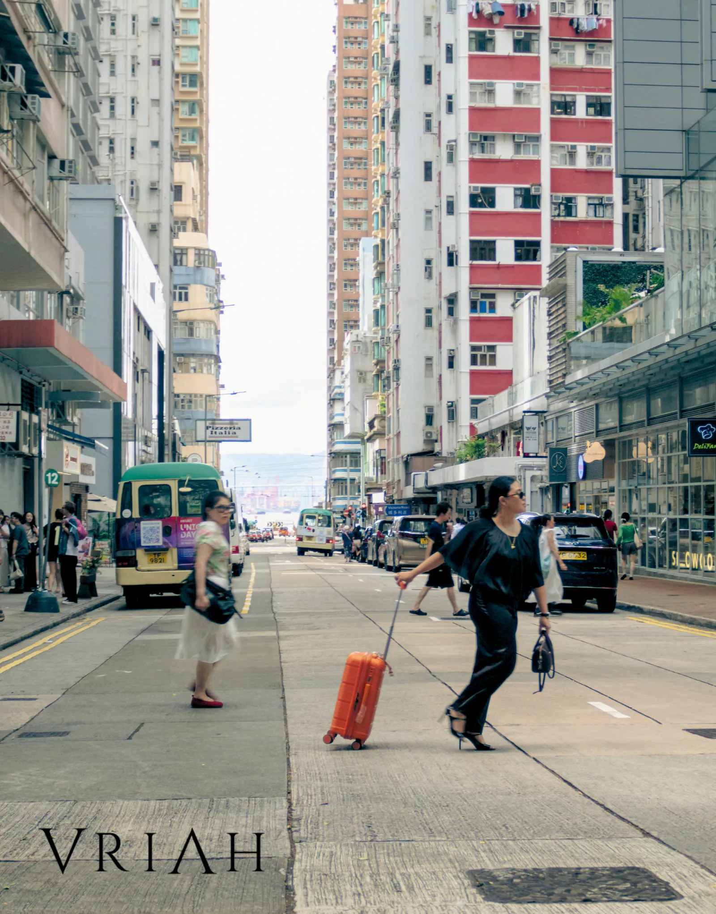
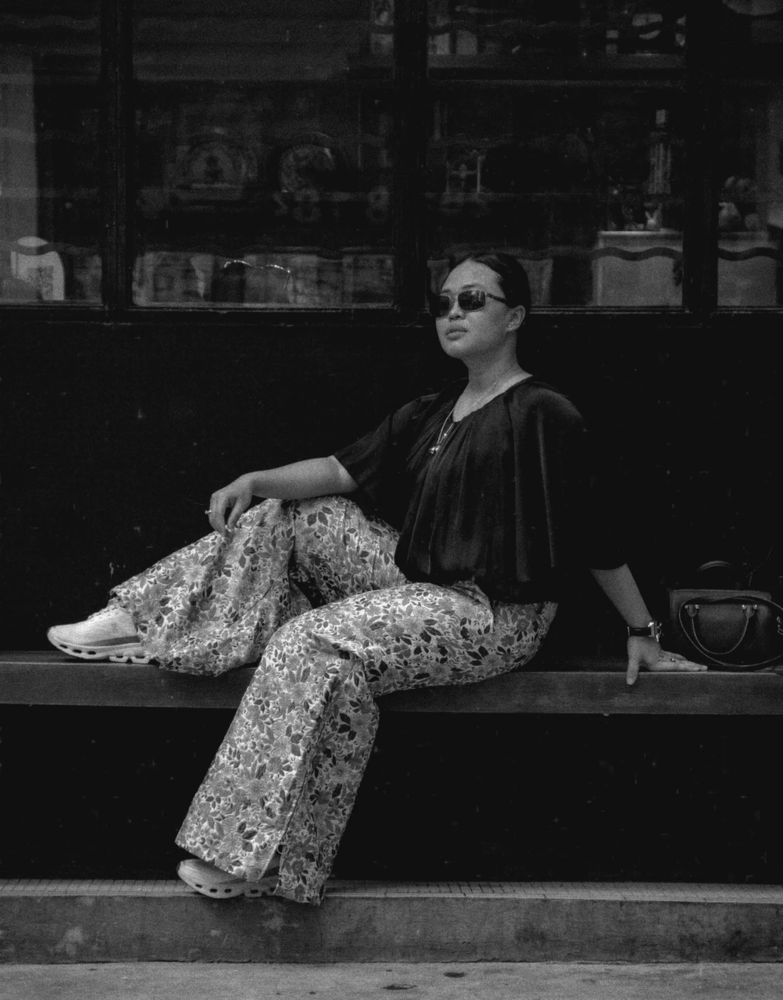
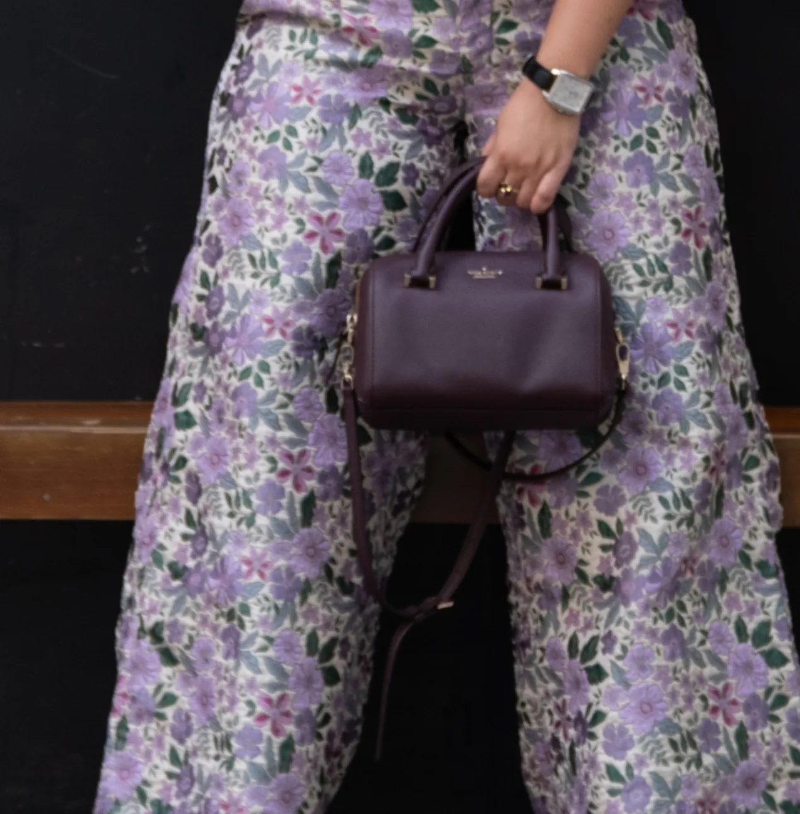
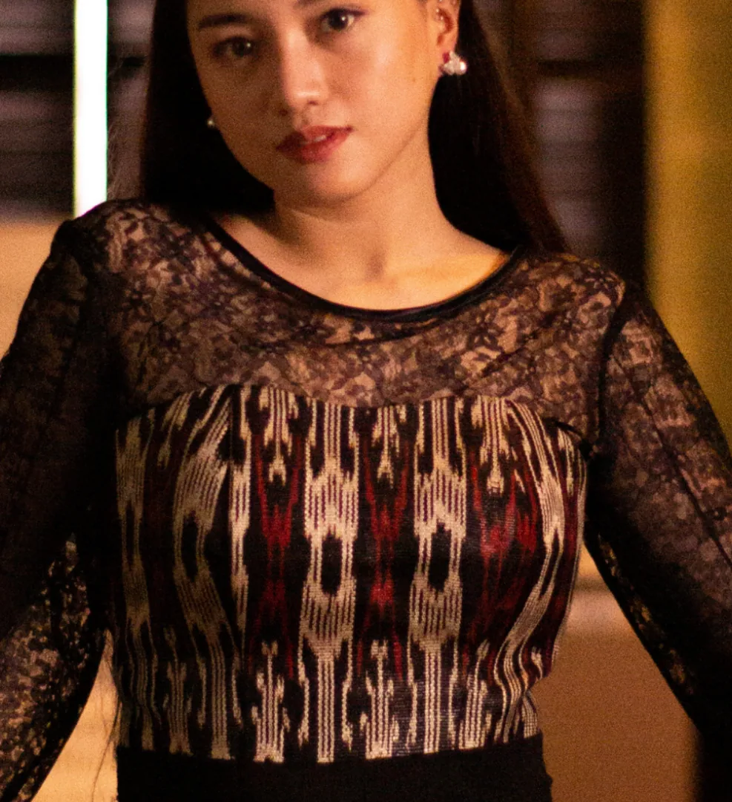

The URIAH Point of View
One day, five moods. Follow the light from the first street of the morning to the last warm room of the evening.


I · Morning
The URIAH Point of View
One day, five moods. Follow the light from the first street of the morning to the last warm room of the evening.
The Signature Look
A black blouse, cut loose through the sleeve, over lilac floral wide-leg trousers. Our most-asked-about look, shown from every side.


The city before it fills. Soft colour, open streets, the day still undecided.

Crossings, signals, a suitcase in tow. Clothes that keep their composure in motion.



09Coffee, then onwards
A shopfront, a ledge, a passing tram. The quiet minutes where style is most personal.




12By the tram
Fabric & Craft
We begin with how a piece feels against the skin, then how it falls when you move. The details below are where that thinking lives.




Satin, florals and water-bright afternoons. Everything a little lighter, a little slower.


Lamplight, old wood, woven detail. The day closes with a little more presence.


A Personal Enquiry
For sizing, availability and orders, speak with us directly.
Message URIAH ↗